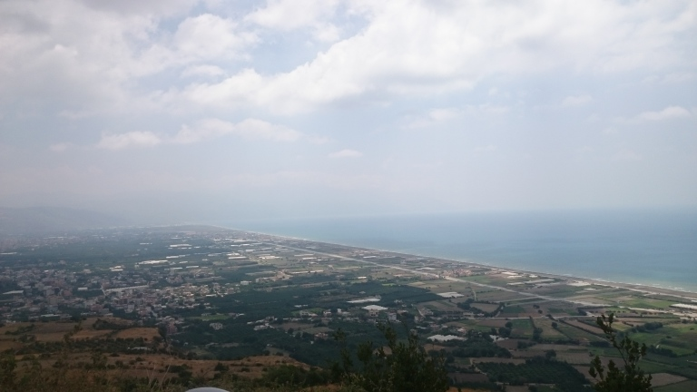
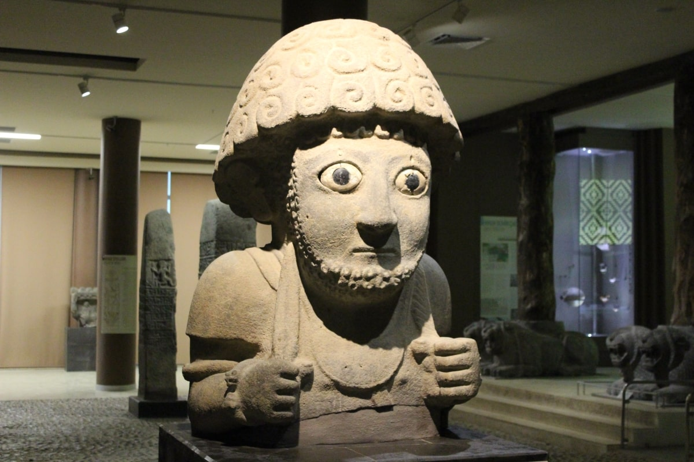
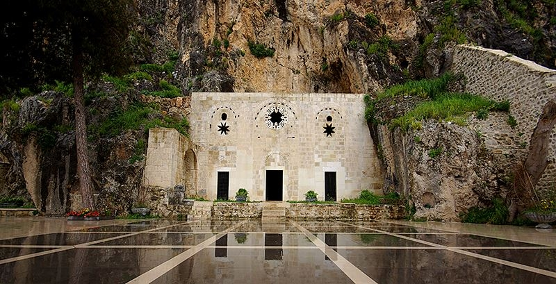
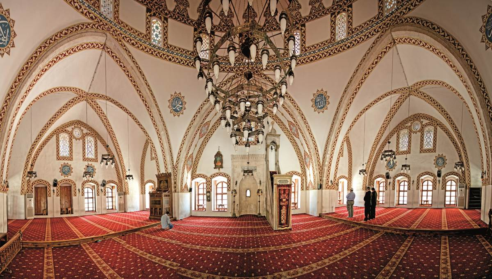

Dünyanın en uzun 2.Kumsalı  Ana Sayfa Geri Dön Dünyanın 2. ve Türkiyenin 1. En büyük Arkeoloji müzesi  Ana Sayfa Geri Dön Dünyanın ilk Hiristiyan kilisesi St.Pierre Kilisesi  Ana Sayfa Geri Dön Anadolunun ilk camisi Habib'ün Neccar Cami  Ana Sayfa Geri Dön